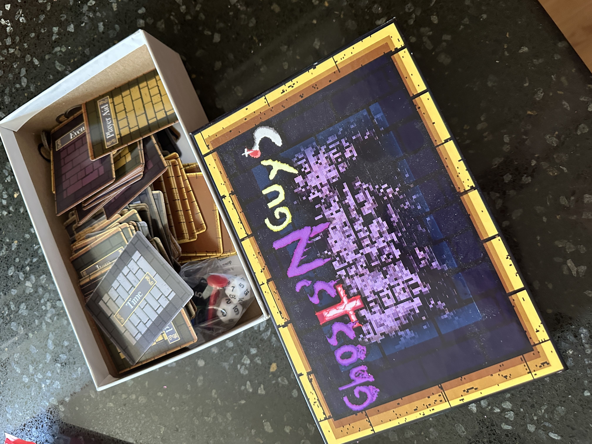

This video showcases an example of me using Javascript to create an interactive image as you can see in the video. It showcases a house that starts within the spring and during daytime. Yet when you click upon the screen the scene changes to a point where it is autum and in the middle of the night. This shows my skills and capabilities in web design and within other languages such as java,Python, and unity.

The Images shown within this section demonstrate my work in game design and creative development. Me and my team had started from complete scratch. We came up with an idea, a story to go along with it as well as the designs of the box,title,gamepeices,cards etc. We used the resoruces that were provided to us and pushed through moving past the balancing part of the game the slowest out of all of the sections. The game was meant to be played with 2-5 players as the guys try to hunt down the ghost before the ghost gets stronger as it reaches 12 am. This creation that me and my team made is the peice out of all my work that i am the most proud of.